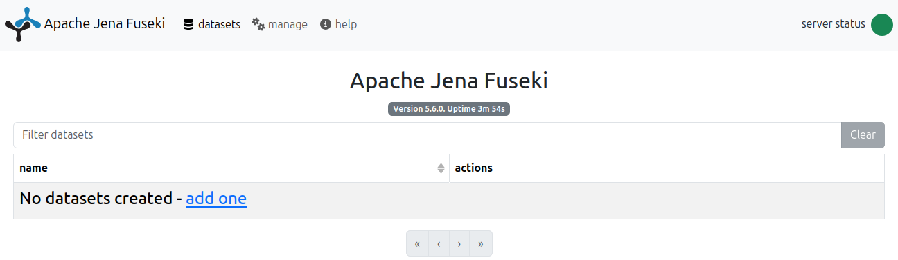

EMO-BON Metagenomics: From Backend Integration to Frontend Processing
November 26, 2025
EMO-BON establishes a long-term omics observatory for marine biodiversity through bimonthly sampling of coastal waters and both soft and hard sediments across more than 20 stations in Europe. Standard operating procedures are applied for sample collection, sequencing, and workflow analysis to ensure consistent taxonomic and functional annotation. FAIR principles are implemented using appropriate ontologies, RO-Crates, and a Python-based data analysis toolkit prepared for deployment in Virtual Research Environments (VREs).
Session 1
Online session hosted online on 3rd November (slides)
Session 2
Faculty of Pharmacy of the University of Porto, 17th November during the ELIXIR Portugal All Hands 2025
This tutorial provides a set of minimal examples on how to generate a knowledge graph from set of RO-Crates, and use it as a sparQL endpoint either directly or using python rdflib. How to organize the data and build the RO-Crates is beyond scope, but galaxy tutorial is a great starting point.
Second part focused on a specific use case of EMO-BON data, the pilot implementation of the Virtual Research Environment is introduced, basic visualization and analysis demonstrated, however, more extensive resources will be provided when the VRE is fully deployed and operational.
Environmental setup
This setup serves is ubiquitus for both parts of the tutorial. We will clone two repositories and install one of them. To keep everything exactly the same, we create a designated folder
mkdir emobon_demo
cd emobon_demoCreate a dedicated conda/python environment
# if you are using conda
conda create -n "emobon" python=3.10 # or higher
conda activate emobonPython resources
Jupyter notebooks are included in the tutorials repository, which we clone locally
# create a folder
mkdir biohap
cd biohap
# clone the repository into newly created folder
git clone https://github.com/Py-ualg/biohap.git
# step into the repository
cd biohap
# install dependencies using pip
pip install -r requirements-biodata.txt
# setup jupyter kernel
ipython kernel install --user --name "biohap"Separate setup is provided for the Data Analysis Toolkit section.
Backend setup
As we are going to work with EMO-BON metagenomics data, one way is to download some of the RO-Crates GitHub repository manually.
Easier, however. is to clone the whole repository. Navigate back to the ..../emobon_demo/ and do:
mkdir ro-crates
cd ro-crates
git clone https://github.com/emo-bon/analysis-results-cluster-01-crate.gitAs you see in the GH as well, you have now the RO-Crates per sample and corresponding .ttl files to simplify your life.
We will use fuseki server for a SPARQL endpoint. It is a java ndpoint, therefore, you might need to install java first if java -version command does not return anything or your version is <17.0.
sudo apt update
sudo apt install -y openjdk-17-jre-headless
java -versionHere comes the fuseki download itself. Please chose appropriate folder for this. For direct download visit this page.
wget https://dlcdn.apache.org/jena/binaries/apache-jena-fuseki-5.6.0.tar.gz
# open the archive
tar -xvf apache-jena-fuseki-5.6.0.tar.gzFor java, if you have winget, you can follow these steps (not tested by the authors). Otherwise, download OpenJDK .exe file from microsoft and install it. You might need to close and reopen the command line window to see the updated version with java --version command in your PowerShell.
Download directly the fuseki 5.6.0 zip file from apache and extract the archive.
Hands-on tutorial
There are many parallel technologies to employ in each step. The pipeline here relies on fuseki for exposing the SPARQL endpoint and uses python to query the graph.
A RO-Crate is an integrated view through which you can see an entire Research Object; the methods, the data, the output and the outcomes of a project or a piece of work. Linking all this together enables the sharing of research outputs with their context, as a coherent whole. https://www.researchobject.org

Note that we already have some of the EMO-BON RO-Crates locall in /emobon_demo/ro-crates/analysis-results-cluster-01-crate/.
Description of all the contents of a RO-Crate is contained in its root directory in the ro-crate-metadata.json, strictly with this name. We cannot upload directly the ro-crate-metadata.json files to the SPARQL endpoint, first they need to be serialized. We do that in the jupyter notebook.
Initialize the jupyterlab server
# ideally in the biohap folder
python -m jupyterlabOpen biohap/biodata_pt/python_tools/01_fuseki_emobon.ipynb. Run Section 0, imports and function definitions. Section 1 serializes ro-crate-metadata.json files to turtle (.ttl) compatible with graph ingestion. Do note forget to change the relative path from your home to the analysis-results-cluster-01-crate folder.
Expose your triples as a SPARQL end-point accessible over HTTP. Fuseki provides REST-style interaction with your RDF data, here running locally on localhost. Navigate to your downloaded fuseki files, open the archive if you have not done it yet and start the server
cd apache-jena-fuseki-5.6.0/
# start the server
./fuseki-serverThis should show you similar to
15:46:47 INFO Config :: Fuseki Base = /home/david-palecek/coding/apache-jena-fuseki-5.6.0/run
15:46:47 INFO Config :: No databases: dir=/home/david-palecek/coding/apache-jena-fuseki-5.6.0/run/configuration
15:46:48 INFO Config :: UI Base = fuseki-server.jar
15:46:48 INFO Shiro :: Shiro configuration: file:/home/david-palecek/coding/apache-jena-fuseki-5.6.0/run/shiro.iniNow opening a default fuseki port 3030 at http://localhost:3030/, you should see something like

Upload Dataset / Graph
In fuseki, go new dataset -> give it a name emobon -> add data -> select the .ttl files we serialized in section RO-Crates and upload all or one by one.
How to create new dataset and upload data to it from python is shown in Section 3 and 4. of the biohap/biodata_pt/python_tools/01_fuseki_emobon.ipynb notebook.
Pseudo code for serialization of ro-crate-metadata.json and data upload (no new dataset creation) would look like
# read the json file and convert it to a graph
with open(".../ro-crate-metadata.json", "r", encoding="utf-8") as f:
jsonld_text = f.read()
g = Graph()
# rdflib accepts a JSON-LD string as input; base is optional
g.parse(data=jsonld_text, format="json-ld", publicID=base)
# upload data to the endpoint
resp = requests.put(
FUSEKI_URL,
data=g.serialize(format="turtle").encode("utf-8"),
headers={"Content-Type": "text/turtle"},
timeout=60,
)The example which integrates getting rocrates from GH directly is in biohap/biodata_pt/python_tools/02_fuseki_emobon_GH.ipynb or online.
The direct way from fuseki is to edit the query in actions. See more detailed but accesible introduction with examples. When you click query, the default query is shown
PREFIX rdf: <http://www.w3.org/1999/02/22-rdf-syntax-ns#>
PREFIX rdfs: <http://www.w3.org/2000/01/rdf-schema#>
SELECT * WHERE {
?sub ?pred ?obj .
} LIMIT 10, which queries all the triples in the graph.
SELECT (COUNT(*) as ?c)
WHERE {
?subject ?predicate ?object .
}
LIMIT 10text/html files.
PREFIX sdo: <http://schema.org/>
SELECT ?x ?dtype
WHERE {
?x sdo:encodingFormat ?dtype .
FILTER regex(str(?dtype), "^text/html", "i")
}sdo:downloadUrl of those files.
PREFIX sdo: <http://schema.org/>
SELECT ?x ?dtype ?durl
WHERE {
?x sdo:encodingFormat ?dtype ;
sdo:downloadUrl ?durl .
FILTER regex(str(?dtype), "^text/html", "i")
}Now you can click the link of one of the Krona files, open them in the browser and with no surprise, it is a Krona plot.
Now let’s get the real metaGOflow outputs, specifically SSU taxonomy tables. There are several ways how to do it.
1. RO-Crate browser EMBRC hosts the RO-Crate viewer for the EMO-BON data
2. Local SPARQL Write a query to get the sdo:downloadUrl links, put them into your browser, which automatically triggers the download. Hint for the exercise below, match regex of the object on “SSU-taxonomy-summary”.
PREFIX sdo: <http://schema.org/>
SELECT ?subject ?predicate ?object ?durl
WHERE {
?subject ?predicate ?object .
FILTER regex(str(?object), "SSU-taxonomy-summary", "i")
OPTIONAL { ?object sdo:downloadUrl ?durl }
}
LIMIT 503. Use data version control (DVC) tool Shown in the python implementation of the above, which follows in the next section. For more on dvc, check its documentation.
It is possible to export the tables form the fuseki for subsequent work, but let’s do everything seamlessly from the jupyter notebook.
First we reproduce the queries in Section 2 of biohap/biodata_pt/python_tools/01_fuseki_emobon.ipynb notebook (or online)
The jupyterlab server should be still running, if not start it again in the .../biohap folder.
python -m jupyterlabSince we have already ingested the triples from the RO-Crates, we just need to query the existing endpoint
q = """
SELECT (COUNT(*) AS ?c)
WHERE {
?s ?p ?o
}
"""
r = requests.get("http://localhost:3030/emobon/query", params={"query": q}, headers={"Accept": "application/sparql-results+json"})
print(r.json())In the requests target, you see we query emobon dataset, which we created earlier. The returned json is relatively easy to convert to a dataframe (sparql_json_to_df function)
def sparql_json_to_df(sparql_json):
"""
Convert a SPARQL SELECT query JSON result to a pandas DataFrame.
Parameters
----------
sparql_json : dict
JSON returned by Fuseki / SPARQL endpoint with Accept: application/sparql-results+json
Returns
-------
pd.DataFrame
"""
vars_ = sparql_json.get("head", {}).get("vars", [])
rows = []
for binding in sparql_json.get("results", {}).get("bindings", []):
row = {}
for var in vars_:
# Some results might not bind all variables
if var in binding:
row[var] = binding[var]["value"]
else:
row[var] = None
rows.append(row)
df = pd.DataFrame(rows, columns=vars_)
return dfThe point behind setting up SPARQL graph database comes together when combining local EMO-BON queries with public SPARQL endpoints from wikidata and UniProt. Demonstration is performed in Section 5 of the biohap/biodata_pt/python_tools/01_fuseki_emobon.ipynb.
There is a python wrapper for SPARQL SPARQLWrapper, which is pip installable and can be used as a standard python module but also as a command line script.
Beyond only getting the data, Graph based deep learning is a fast-growing field.
Because (a) public SPARQL endpoint with all the EMO-BON data, we completaly separate this second part from the first part, and data starting point will be standard .csv tables, just compressed into .parquet files. Since Blue-Cloud 2026 virtual research environment does not exist, we will run all the analysis locally.
# create a folder
mkdir momics-demos
cd momics-demos
# clone the repository into newly created folder
git clone https://github.com/emo-bon/momics-demos.git
# step into the repository
cd momics-demos
# install dependencies using pip
pip install -e .
# setup jupyter kernel
ipython kernel install --user --name "emobon"All dependencies were installed in the setup. Initialize the jupyter server with
cd momics-demos
python -m jupyterlabOpen wf2_diversity/diversities_panel.ipynb. It looks and it is a native python notebook code. However clicking the panel icon  initiates the dashboard.
initiates the dashboard.
After getting familiar with the functionality, pick your favourite combination of taxon level + categorical variable showing certain pattern on the first two PCA components.
Every dashboard is also available for interactive mode ..._interactive.ipynb. After discovering one of the main drivers, we would like to see what drives this difference.
Select one sample from each category and try to identify the taxa responsible from the variance.
Possible options
- One approach could be the permonova test removing the taxa one by one. Permonova is implemented in
marine-omics-methods(marine-omics on PyPI). - Alternatively compute correlation of each
taxonwith the PC1 and PC2, rank the features - Fit features as vectors onto PCoA (envfit). This is the most widely used method, especially in ecology (vegan package in R). In Python (via scikit-bio):
from skbio.stats.ordination import cca_scores
# envfit equivalent not built-in, but you can manually regress:
import scipy.stats as st
results = {}
for feature in abund.columns:
slope_x, _, r_x, _, _ = st.linregress(coords["PC1"], abund[feature])
slope_y, _, r_y, _, _ = st.linregress(coords["PC2"], abund[feature])
results[feature] = (r_x, r_y)
vectors = pd.DataFrame(results, index=["r_PC1", "r_PC2"]).TThis is a free time to try your own ideas with the data building upon the existing functionality of the momics-demos. Do not hesitate to raise issues, and reach out.